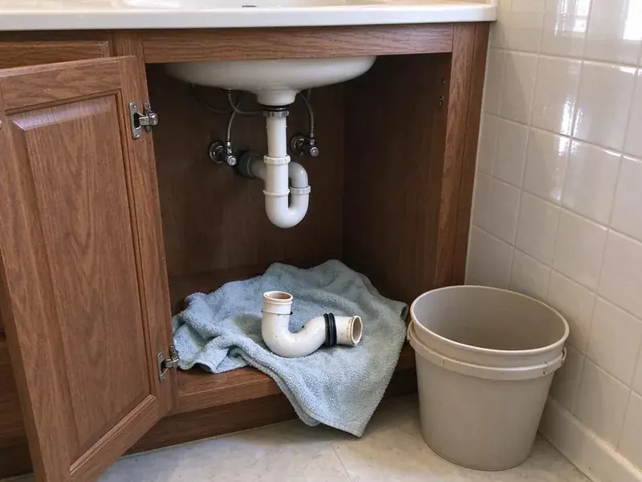

Emergency Plumbing Repair in Tuckahoe, VA
Water spraying, sewage backing up or a gas smell near the water heater? Our emergency plumbers answer at any hour in Tuckahoe, VA.
- Live Phone Shutoff Help
- Warrantied Repairs
- Price Before Work
- Round-the-Clock Response

Water Where It Shouldn't Be in Tuckahoe, VA?
Our plumbers keep pipe, fittings and tank parts on the truck, so most emergencies get fixed in one visit.
Emergency Plumbing Repair in Tuckahoe, VA When Every Minute Counts
FBN Plumbing sends emergency plumbers in Tuckahoe, VA for major leaks, sewer backups and gas line problems. Safety comes first on gas. On a gas call, the plumber checks that the area is safe, finds the leak with a detector and soap test, repairs the fitting and pressure tests the line before anything gets relit.
Work we handle every week:
- Main line backup clearing with augers, jetters and cameras
- Leaking water heater shutoff and repair
- Gas leak repair and pressure testing

Additional Plumbing Repair Services in Tuckahoe, VA
We offer expert plumbing repair services across Tuckahoe, VA to fix leaks, restore flow, and keep your system running smoothly.


Customers
Why Choose FBN Plumbing for Emergency Plumbing Repair in Tuckahoe, VA?
Every emergency plumber we send is fully licensed and carries a full parts inventory. That means fewer temporary fixes and fewer return visits.
- Trained Technicians, Our plumbers repair every common emergency and work to Virginia plumbing code.
- Real Repairs, We replace the failed part instead of patching it, which keeps it from coming back.
- Ready Trucks, Our vans carry the parts required for the most common plumbing emergencies.
Citywide Coverage
Single-family homes, apartments, condos and businesses in Tuckahoe all get the same emergency response. Holidays are covered. A pipe that bursts on a holiday soaks the floor just as fast, so our on-call crew works through weekends and holidays.
Experienced Team
The FBN Plumbing crew has handled emergency calls in homes across Virginia. They've seen every kind. Whether it is a slab leak under a kitchen or a pipe that froze and split in an exterior wall, they have done the repair before and know what to check once the water is off.
Safety-First Approach
Sewer line breaks and gas leaks get extra care. Protective gear goes on. Plumbers follow code on every repair and wear gloves and eye protection around sewage, with containment so the family stays safe.
Trusted Certified Tuckahoe Plumbing Services Professionals
At FBN Plumbing, we take pride in licensed, certified plumbing services throughout Tuckahoe, VA. Those papers on the wall mean something. Our plumbers hold recognized industry credentials, and they follow strict safety and quality rules on every repair, installation and maintenance call we run.
Call Us Now PHCC Plumbing Contractor Recognition
PHCC Plumbing Contractor Recognition Better Business Bureau (BBB) Accreditation
Better Business Bureau (BBB) Accreditation Angi Certified Pro
Angi Certified Pro ISO 9001 Quality Management Certification
ISO 9001 Quality Management CertificationEmergency Plumbing Calls We Handle in Tuckahoe, VA
Burst Pipe Emergency Repair in Tuckahoe
A burst pipe can release several gallons per minute into walls, ceilings or floors. Close the main valve now. Common causes are high pressure, corrosion, a nail through the pipe and hard freezes, and after the repair we check the house pressure and the pipe near the break so it does not happen again.

Sewer Backup Emergency Repair in Tuckahoe, VA
Sewage coming up in tubs, showers or floor drains means the main is blocked. Keep kids and pets away. After clearing the line with an auger or jetter, a camera shows us whether roots, grease, wipes or broken pipe caused it. We explain repair options if the line is damaged.
Major Leak Detection and Repair in Tuckahoe
Hidden leaks do their damage before anyone sees them. Bills give them away. Our plumbers use acoustic sensors and thermal cameras to find leaks behind walls, in ceilings and under slabs, so the opening we make is small and right over the pipe instead of a guess. Repairs in Tuckahoe are tested before closing.
Toilet Overflows After Hours in Tuckahoe, VA
Overflows happen at night more than you'd think. Close the supply stop first. We clear it with a closet auger, pull the toilet if the clog is deeper, and swap out a bad fill valve, flapper or wax ring. Tuckahoe, VA homes are left sanitary.
Gas Leak Detection and Repair in Tuckahoe, VA
A rotten egg smell means get out first. Call from outside. After the gas company says it's safe, we locate the leak with a detector and bubble test, fix the fitting and pressure test before relighting. All gas work follows Virginia safety codes in Tuckahoe, VA.
Sewer Line Backup Emergency in Tuckahoe
Raw sewage in the house is a health hazard. Don't run any fixtures. We open the cleanout, clear the main and run a camera to see if roots, a sag or a broken pipe caused it, so you know whether you need a repair or a cleaning. Tuckahoe backups get cleaned up too.
Water Heater Failure in Tuckahoe, VA
No hot water on a weeknight is a problem, and a leaking tank is an emergency. Both get a call back fast. On tanks we test elements, thermostats, gas valves and relief valves, and on tankless units we read the codes, then repair or schedule a swap. Service is available across Tuckahoe, VA.

Main Water Line Break in Tuckahoe, VA
A broken main can flood the yard or leave you with no water. Shut it at the meter. With the water off at the meter, our crew finds the break with detection gear and digs one hole instead of trenching across the yard. Service is restored as quickly as possible.
Emergency Plumbing Repair Near Me in Tuckahoe, VA
Being local means shorter drives and knowing the homes in this area. That saves time. Knowing which areas have galvanized pipe, attic water heaters and hard-to-find shutoffs means we start diagnosing before we park. Pick up the phone the moment it breaks.
Searching for an emergency plumber near me in Tuckahoe, VA at night? FBN Plumbing has techs on call around town. With plumbers already in the area, the drive is short, and dispatch can talk you through the shutoff in the meantime. We'll stay on the phone.
FBN Plumbing at a Glance
- Fully licensed plumbing team covering Tuckahoe, VA
- 24/7 emergency service with same-day scheduling
- Clear written estimates, no hidden fees
- 4.9-star rated by 798+ Virginia customers
Tuckahoe Map
Tuckahoe Information
- Population
- 48,051
- Area codes
- 804/434/757
- Service area
- Tuckahoe and towns within a 40 mile drive
- Nearby
- Richmond, Fredericksburg, Williamsburg, Charlottesville
Most Virginia winters bring several hard freezes, and cold snaps can burst pipes in crawlspaces, garages and exterior walls. In Tuckahoe, VA, emergency calls also come from ground movement that cracks pipe and water heaters that let go without warning.
Expert Services
Call FBN Plumbing for reliable plumbing work done by licensed pros in Tuckahoe, VA.
Our Specialized Plumbing Services in Tuckahoe, VA
At FBN Plumbing, you get every kind of plumbing service from one company across Tuckahoe, VA. We go from leak detection all the way to full system installations, for homes and commercial buildings, and we do it quickly at a fair price. Explore our core services below:


What Happens When You Call in an Emergency in Tuckahoe, VA
Most emergency calls in Tuckahoe go the same way, start to finish.
Request a Quote
Call (434) 230-6997 and tell us what is happening, and we will help you shut off water or gas right away. We send someone without delay.
Stabilize the Situation
On arrival, we stop the leak or backup and assess the damage. We give you a clear price for the repair before starting.
Repair and Restore
We make the repair, test the system and restore service. We clean up and explain how to prevent a repeat emergency.
Frequently Asked Questions About Emergency Plumbing Repair in Tuckahoe
Small emergency fixes like a minor leak usually run $150 to $400. Sewer work runs higher. A burst main or a sewer line repair can reach $500 to $2,000 or more, depending on how deep the pipe is and how much digging or wall work the job takes. The price comes before we start.
After-hours emergency calls may include a higher dispatch fee. We give you the price before dispatching a plumber.
Close the main water valve. That's step one. Beyond that, move valuables away from the water, turn off power to any wet area at the breaker if it is safe to reach, and leave repairs on pressure or gas lines to a licensed plumber.
Anything that threatens your home or health right now. A burst pipe qualifies. Flooding leaks, sewer backups, gas smells and no water at all are emergencies, and the test is whether waiting until morning makes it worse.
Emergency repairs carry the same written workmanship warranty as scheduled work. Materials carry manufacturer warranties too.
Sudden water damage from a burst pipe or failed appliance is often covered. We supply photos and documentation for the claim.
Yes, FBN Plumbing handles commercial emergencies in Tuckahoe, VA. Downtime costs money. We respond quickly to restaurants, offices and stores and keep repairs to commercial code while getting you open again.
Burst pipes and severe leaks top the list. Backups count too. Toilets that won't stop, main backups, gas leaks and no hot water in winter all threaten health or property, so we dispatch right away.
What Our Customers Say About Our Plumbing Experts

Emily R.
The shutoff valve under our kitchen sink snapped off in my hand on a Sunday morning. FBN Plumbing had someone out by early afternoon. He replaced both angle stops with quarter turn valves and showed me where our main shutoff was, which I honestly did not know.
Plumbing Repair · Tuckahoe, VA
Greg S.
I manage a small strip center with six tenants. FBN Plumbing handles our annual backflow testing and fixed a recurring clog in the shared sewer line that had been backing into the nail salon. Their reports come in clean and on time.
Commercial Plumbing · Richmond, VALisa C.
Water was pouring out from under the washing machine on a holiday weekend. FBN Plumbing talked me through closing the valves over the phone and had a plumber at the house within ninety minutes. It was a burst fill hose.
Emergency Plumbing · Williamsburg, VA
James P.
Our restaurant had a slow leak at the hand sink that was rotting the cabinet base. FBN Plumbing came in at six in the morning before prep, replaced the trap and both supply lines, and was packed up before my first cook clocked in.
Commercial Plumbing · Richmond, VAMegan L.
Our upstairs tub drained so slowly that every shower turned into a bath. FBN Plumbing pulled a wad of hair out of the stopper and then snaked the line past the trap. Three months later it still drains fast.
Drain Cleaning · Tuckahoe, VA
Jessica T.
We were adding a gas range in a kitchen remodel and needed a new line run from the meter. The plumber pulled the permit, ran the pipe through the crawl space, and had it inspected and approved within the week.
Gas Line Repair · Williamsburg, VA